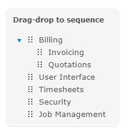
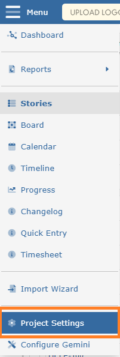
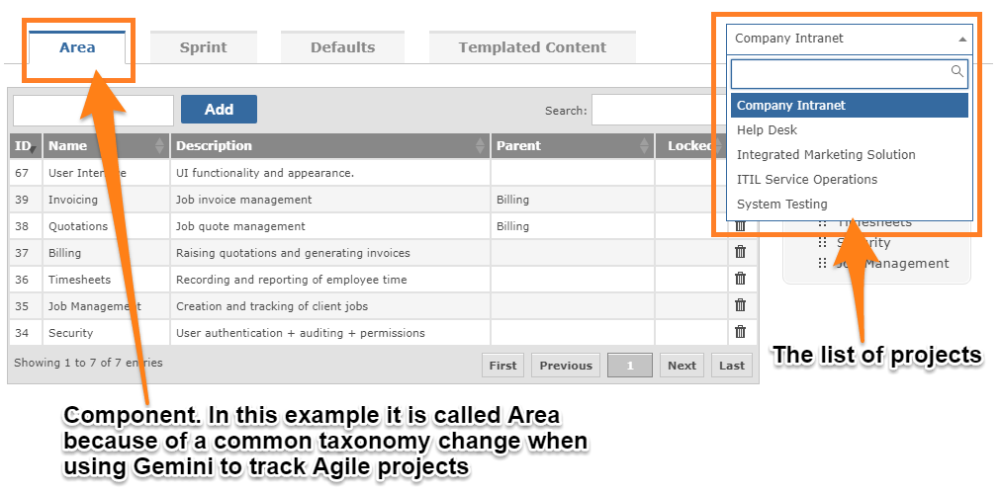

Almost every project can be broken down into smaller, logical areas. These 'building blocks' of a project are termed Components in Gemini. A key feature of Components in Gemini is the ability to nest them in a hierarchical fashion. Thus you can create Components like:

Projects may utilise Gemini's inbuilt breakdown of Components (often known as Area). You may choose not to use this field or to create your own Custom Field to breakdown work.
To create Components/Areas, select Project Settings from the menu. You will then see the Components/Area tab.
Select the project you wish to maintain Component/Area data for and you can add and organise this standard work breakdown structure.

Below is a sample component list for a project. Note how it has been organised into parent/child levels.

Add components as required. Enter the component name and click add. Description is not mandatory, but if you want to add one, click in the description field and use inline editing to do so. The same is true of Parent and the Locked flag.
NoteComponents can only be maintained by users who have "Can Manage Components" permission.